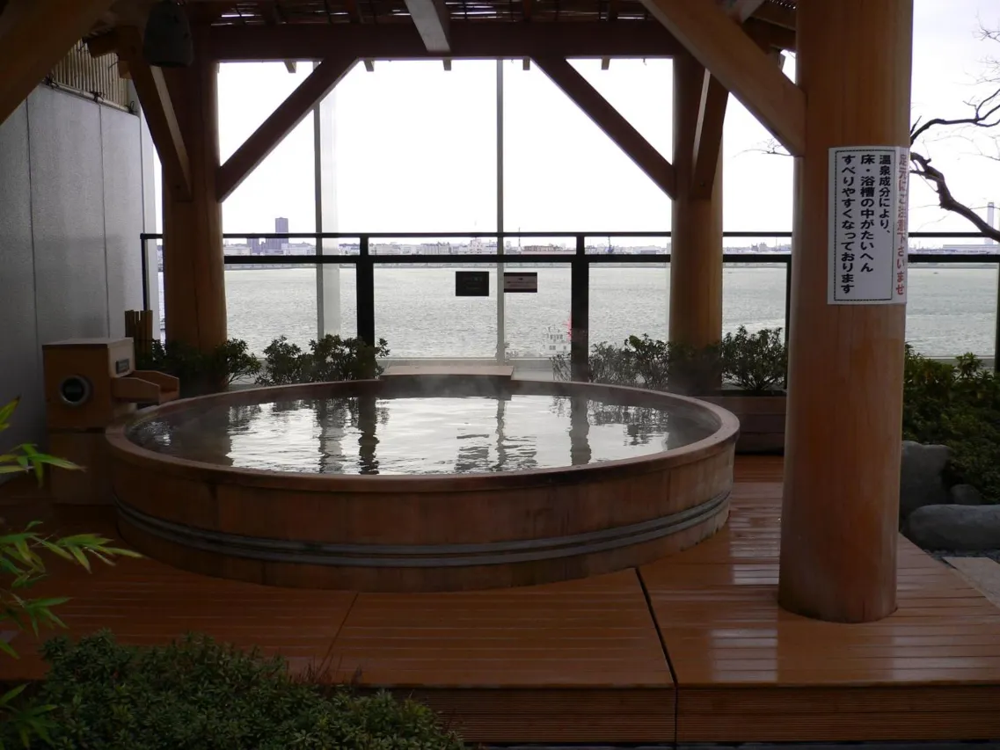
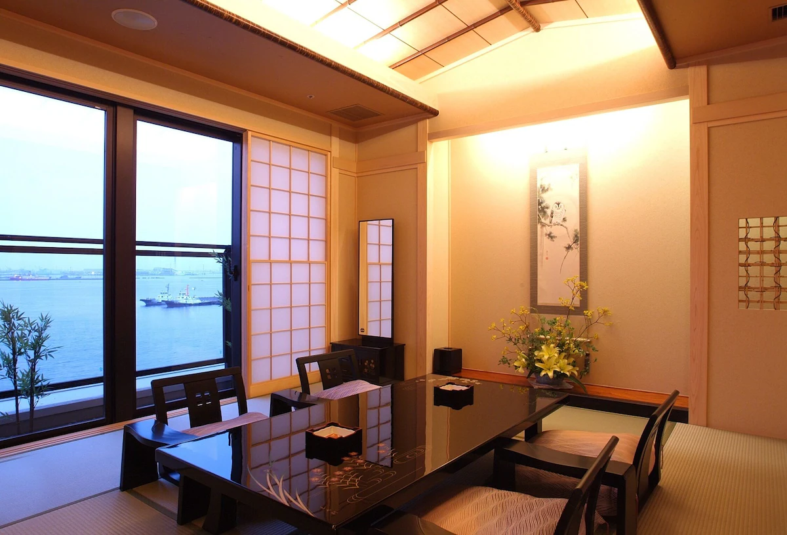
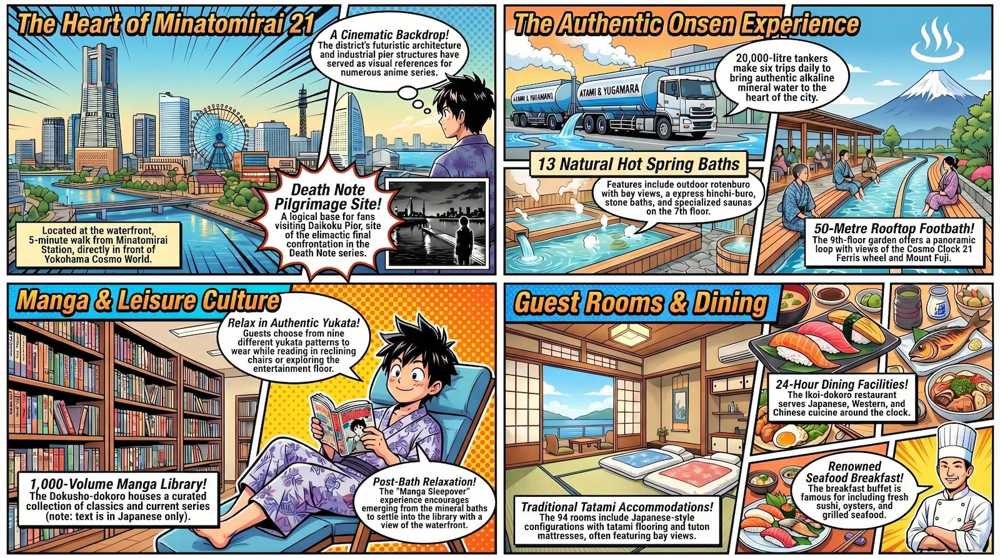
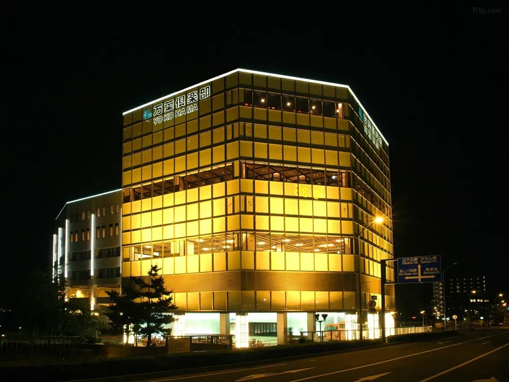
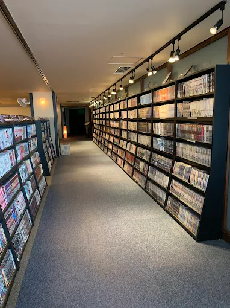
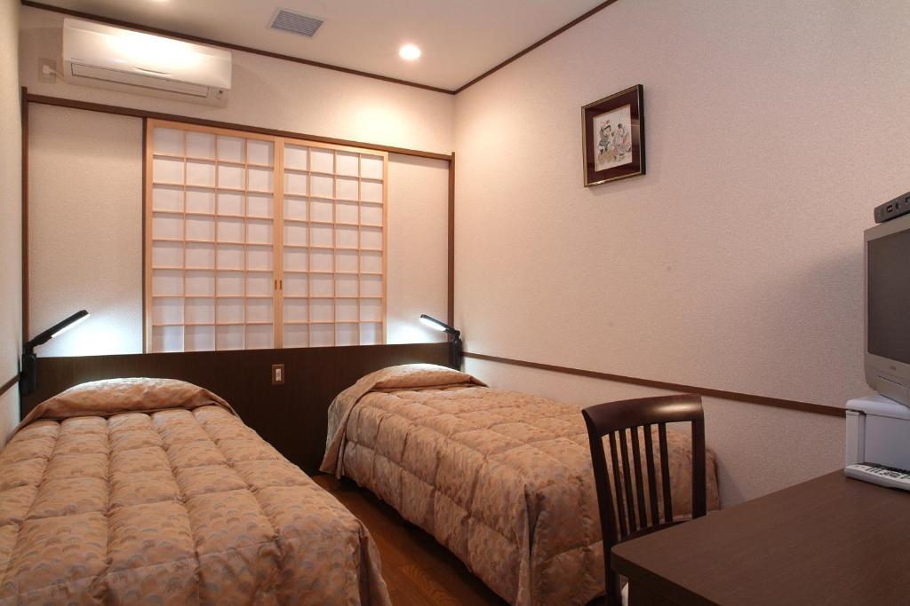
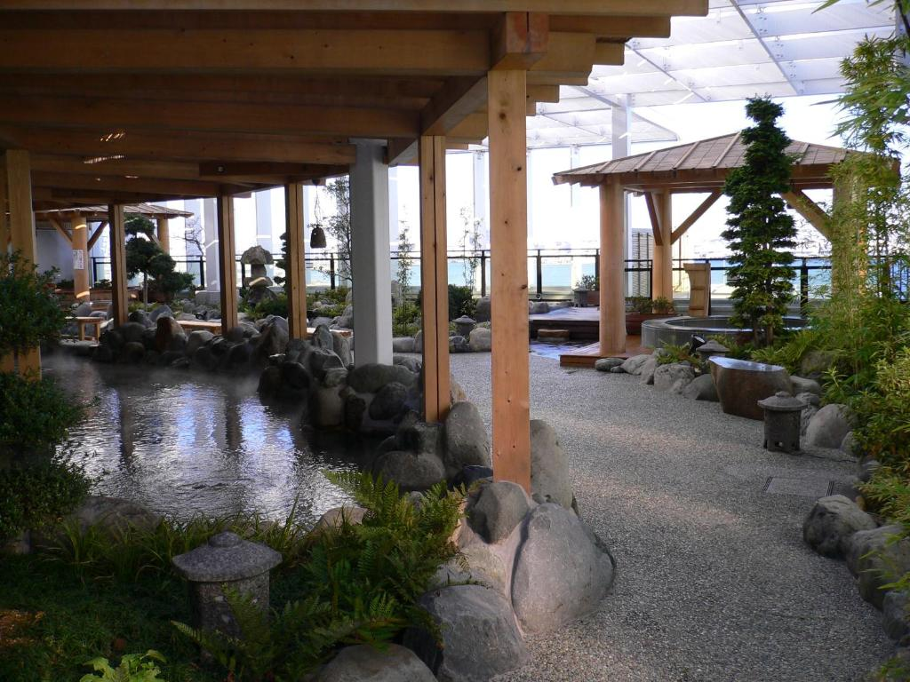
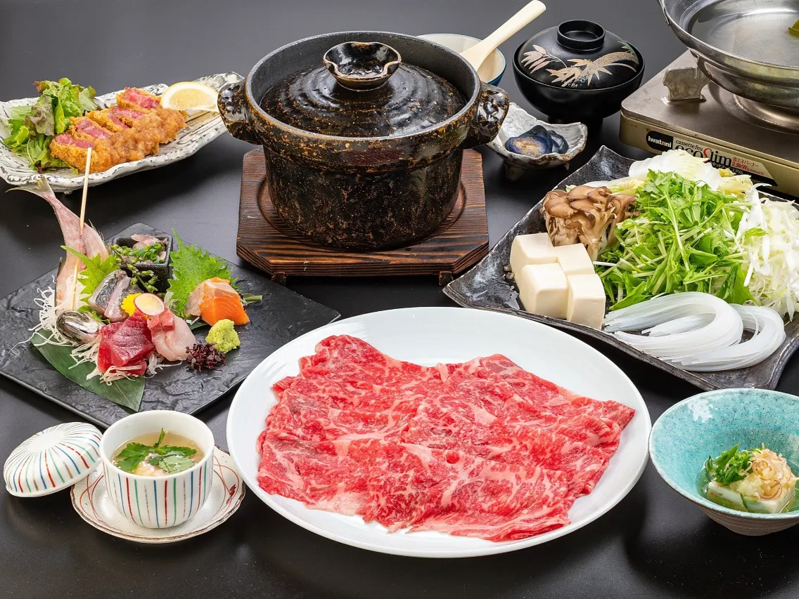
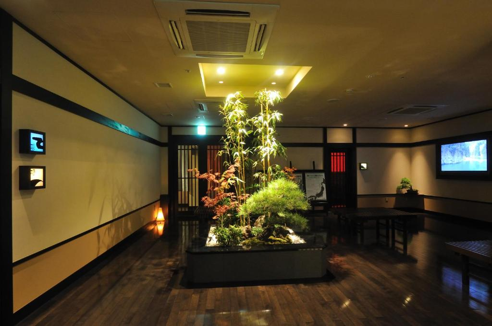

Yokohama Minatomirai Manyo-Club is one of Japan's most singular urban onsen experiences — an eight-story hot spring complex in the heart of Yokohama's waterfront district where you soak in genuine mineral water trucked daily from Atami and Yugawara, read manga in yukata between bathing sessions, and watch the Cosmo Clock 21 Ferris wheel turn against the night sky from a rooftop footbath stretching fifty meters around the building. It is not a conventional hotel. It is something more specific: a place where traditional Japanese bath culture and manga reading culture converge — at one of the most visually dramatic waterfront addresses in Japan.
The Manga Library: Reading in Yukata After the Bath
The facility's manga reading area — the Dokusho-dokoro (読書処, or "Reading Spot") — is housed on the entertainment floor alongside the game center, kids' corner, and table tennis. Its approximately 1,000 volumes place it well above a token shelf while remaining a curated selection rather than an encyclopedic archive. The collection spans classic back-catalog titles through currently running series, weighted toward works recognizable across age groups rather than narrow genre corners.

Access is included in standard admission — no separate charge applies. The natural guest flow is to emerge from a bath, pull a volume from the shelves, and settle into one of the reclining chairs in the adjacent relaxation rooms while still in yukata, warm from mineral water, manga in hand, Yokohama waterfront visible through the windows. This combination — unhurried, comfortable, authentically Japanese — is exactly what makes this property a Manga Sleepover in the fullest sense of the designation.
One important note for international readers: the collection is entirely in Japanese. No English, Chinese, or Korean titles are stocked. Guests who cannot read manga in the original will still find the atmosphere of the reading corner distinctive, but the content itself requires Japanese literacy. This is worth knowing before you book specifically for the manga library.
Location: Death Note's Yokohama
Manyo-Club sits at 2-7-1 Shinko, Naka Ward, in the Minatomirai 21 district — five minutes' walk from Minatomirai Station, directly in front of Yokohama Cosmo World, and nine minutes by foot from the Red Brick Warehouse along the waterfront promenade. The building is placed at one of the most visually commanding addresses in Yokohama, with the Cosmo Clock 21 Ferris wheel as a permanent landmark from the front entrance.
For Death Note readers and viewers, the geography here is significant. Daikoku Pier — the industrial waterfront location of the series' climactic final confrontation, where Light Yagami's arc ends among the warehouse structures on the Yokohama harbor — is located in the same bay district, a short distance from Manyo-Club. HotelManga's complete Death Note location guide covers the Daikoku Pier site in full detail, but the strategic point is this: if you are running the Death Note Yokohama leg of the pilgrimage, Manyo-Club is the most logical base. You are in the right district. You have a hot spring bath waiting when you return.
The wider Minatomirai district has appeared as visual reference in numerous anime series beyond Death Note. Its deliberately futuristic 1990s architecture, the Ferris wheel, the bay bridge, and the industrial pier structures at its edges form a skyline that reads immediately as cinematic — the kind of backdrop that animators reach for when they need Yokohama to feel like itself. Staying at Manyo-Club puts you inside that backdrop, not merely near it.
The Onsen: What Makes This Different
Most urban onsen facilities heat tap water and add mineral additives. Manyo-Club does not. The hot spring water used in every bath — indoor and outdoor — is transported from the historically celebrated sources of Atami and Yugawara by a fleet of 20,000-liter tanker trucks making the journey six times a day. This practice revives an Edo-period custom called okumi-yu, in which patrons had quality spring water brought to them rather than making the journey themselves. The water from Yugawara carries an alkaline pH of around 9.4 — colorless, odorless, and silky against the skin in a way that mineral-additive baths never quite replicate.

Thirteen natural hot spring baths are available in total, gender-separated in the traditional onsen manner. The variety within that total is substantial: outdoor rotenburo baths with bay views, a cypress hinoki-buro, a stone bath, a reclining neru-yu, a nano-carbonated bath, dry sauna, salt sauna, and herb steam sauna — all on the 7th floor. For women, the Nanocla nano-mist steam room is a facility-specific feature that draws consistent specific mentions in reviews. Five ganbanyoku bedrock bath rooms at varying temperatures and humidity levels are available at an additional charge, each with a different mineral stone composition including rose quartz, jade, topaz, and tourmaline.
The rooftop Observatory Footbath Garden on the 9th floor is the building's most visually distinctive feature. Its approximately 50-meter circumference wraps around the top of the structure with panoramic views: the Cosmo Clock 21 directly ahead, Yokohama Bay Bridge to the right, and on clear days, Mount Fuji on the western horizon. The footbath is accessible in yukata without changing, so the natural progression from indoor bath to rooftop footbath to night air is uninterrupted. Many guests spend their evenings cycling between the two, timing their rooftop visits to catch the Ferris wheel's changing illumination after dark.
Rooms: The Tatami Experience
Manyo-Club's 94 guest rooms come in Japanese-style and Western-style configurations. This is a facility first and a hotel second — rooms are compact and efficiently designed for exactly what you need when the main event is happening on the bathing floors. The Japanese-style rooms feature tatami flooring, low tables, and futon mattresses; the Western-style rooms add a conventional bed and reading light. All rooms include a TV, refrigerator, electric kettle, green tea, mineral water, and a high-tech toilet. Shiseido skin toner, facial cleanser, and skin lotion are provided, reflecting the bathing culture the facility is built around.
Waterfront-facing rooms on upper floors look directly toward the bay and the Ferris wheel. Multiple guests specifically identify these views as a highlight that more than compensates for compact room dimensions. Request a bay-facing room when booking — the difference between a waterfront view and a courtyard view is worth specifying. The check-in and check-out process routes guests between the 7th-floor reception and their rooms via a locker key system, which reads as a mild inconvenience on first encounter; reading the property's guest instructions before arrival makes it straightforward.
Dining
Manyo-an is a semi-private restaurant styled in the manner of a traditional Japanese dining room, serving course meals — sashimi, tempura, udon, soba — suited to extended post-bath dinners in yukata. The Ikoi-dokoro ("Resting Place") operates 24 hours with a broader menu spanning Japanese, Western, and Chinese cuisine. The breakfast buffet, included in overnight rates, draws specific praise across review platforms: sushi, oysters, and grilled seafood at breakfast is an unexpected detail that guests mention repeatedly. A fruit and smoothie bar features Cold Stone ice cream, and a Kirin beer bar rounds out the options — though the bar closes before the baths, worth noting if a late-night drink is part of the plan.
Cleanliness
Cleanliness is overwhelmingly positive across review platforms — unsurprising for a facility whose identity is built entirely around bathing. Bathing floors, locker areas, and shared spaces are cleaned continuously. The women's vanity area is equipped with Shiseido toiletries in full-size bottles, individual hair dryers, toners, and a makeup station. Room cleanliness receives consistently strong marks. The one recurring note is the air conditioning units in some rooms, described as loud enough that light sleepers may prefer to turn them off at night.

Value
For day visitors, admission of approximately ¥2,950 covers unlimited access to all baths, the rooftop footbath, relaxation rooms, manga library, and entertainment facilities — from 10:00 AM until 9:00 AM the following day. At that price, it is one of the best-value full-day experiences in greater Yokohama. For overnight guests, the room rate includes admission, and the all-in cost becomes genuinely favorable when compared to what a traditional ryokan outside the city would charge for equivalent bathing access alone.
The rooms are compact — the most consistent criticism across platforms. Guests who treat Manyo-Club as a conventional hotel and evaluate the room against the price will frequently feel underwhelmed. Guests who understand they are paying for the onsen, the manga library, the views, and the atmosphere will almost universally leave satisfied. In-facility payments are cash only; plan accordingly and arrive with sufficient yen.
Getting There
From Minatomirai Station
- 5-minute walk — the fastest route
- Minatomirai Line (from Yokohama Station)
- Follow signs toward Cosmo World
- The Ferris wheel is your landmark
From Sakuragicho Station
- JR Keihin-Tohoku Negishi Line
- Yokohama Municipal Subway Blue Line
- 15-minute walk via Kishamichi Promenade
- Scenic waterfront route recommended
From Haneda Airport
- Limousine Bus: 1-minute walk from stop
- Keikyu Line to Yokohama: ~30 min
- Taxi: approx. ¥5,000–¥7,000
- Closest major airport to the property
Free Shuttle Bus
- From Yokohama Station West Exit
- Free for guests and day visitors
- Confirm schedule at manyo.co.jp/mm21
- Useful with heavy luggage or in rain
Beyond Manga and Onsen: An Honest Assessment
Strip away the hot springs, the manga corner, and the waterfront setting, and Manyo-Club is a compact, well-run facility with 94 small rooms, reliable food, and consistent operational standards. It is not a luxury property — rooms lack the space and amenity depth of a comparable mid-range Tokyo hotel, the check-in process has friction that a conventional hotel would not, and cash-only in-facility payments are a genuine inconvenience for international guests. The air conditioning noise in some rooms is a real issue for light sleepers.
What it does exceptionally well: the bathing facilities are first-class for an urban property, the location is visually spectacular, and the overall atmosphere — yukata-clad guests moving between baths and reading area and footbath terrace — is one of those experiences that is essentially impossible to replicate outside Japan and very difficult to find even within it. For guests who book it understanding what it is, satisfaction rates are high and repeat visits are common. For guests who expect a conventional hotel room with easy checkout, there are better-suited options in the same district.
Practical Information
- Check-in: 15:00 Check-out: 10:00
- Day visit: 10:00 AM – 9:00 AM next day (¥2,950 approx.)
- Best rooms: Waterfront-facing, upper floors — request at booking
- Onsen: 13 baths — rotenburo, hinoki, nano-carbonated, sauna, ganbanyoku
- Rooftop footbath: 9th floor, ~50m circumference, open to all guests
- Manga library: ~1,000 volumes (Japanese only) — included in admission
- Nearest station: Minatomirai Station — 5 min walk
- Free shuttle: From Yokohama Station West Exit — confirm at manyo.co.jp/mm21
- Payment: Cash only for in-facility purchases — bring sufficient yen
- Language: Limited English — download the facility map before arrival
Tips for Getting the Most Out of Your Stay
Request a waterfront-facing room on a high floor when booking — it is the single most impactful upgrade available and costs nothing to ask for. The bay view versus a courtyard view is a meaningful difference in how the stay feels.
Time your rooftop footbath visit for dusk. The 20-minute transition from daylight to the illuminated Ferris wheel — warm water at your ankles, the Yokohama skyline beginning its evening sequence — is the most photographed and most remembered moment at the property.
For female guests: choose your yukata pattern at check-in before the popular designs are taken. Nine patterns are available; the selection is small but genuinely part of the experience, and guests who mention it in reviews do so warmly.
If you are running the Death Note Yokohama pilgrimage: visit Daikoku Pier in the early evening and return to Manyo-Club for the late-night onsen and rooftop footbath. The combination of the industrial waterfront of the finale and the mineral warmth of the baths is — in its own way — as distinctively Yokohama as anything in the city.
Hotel Directory
Yokohama Minatomirai Manyo-Club
Photo Gallery

Photo 1
Photo 2
Photo 3'">
Photo 4'">
Photo 5'">
Photo 6'">Soak in the Yokohama Skyline
Check availability — waterfront-facing rooms go fast on weekends.